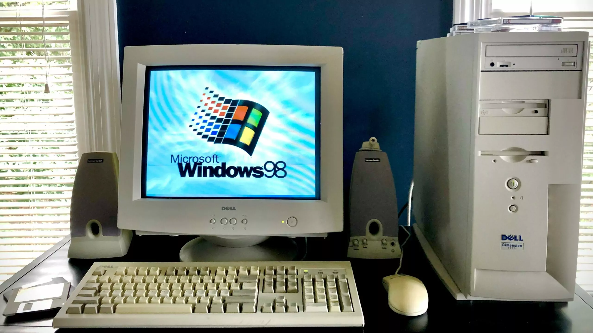

This website is inspired by the Windows 98 era.
"When Dell created the Dimension V333c, it was a great value at an important time in PC history. The race between Intel, AMD, and Cyrix was neck and neck, and Intel was trying to upend the market with its Pentium line of processors. The V333c was released a few months after Microsoft’s Windows 98, and Dell’s reasonable price and well-rounded configuration attracted attention". https://retroviator.com/tag/windows-98/
https://retroviator.com/tag/windows-98">https://retroviator.com/tag/windows-98/">https://retroviator.com/tag/windows-98Vores første computer var en Dell Dimension V333c. Den stod i vores kælder og skulle deles af hele familien, som bestod af mine forældre og mine tre brødre. Min første oplevelse med computeren var en aften, hvor min storebror passede mig, mens mine forældre var ude. For at underholde mig satte han mig foran computeren, startede RollerCoaster Tycoon og lærte mig de grundlæggende ting i spillet. Jeg var altid utålmodig, fordi det tog alt for lang tid at tænde computeren. Skærmen var lige så stor som selve computeren og føltes næsten tungere end PC’en. Hver gang et nyt spil blev udgivet, skulle man bruge mindst 2-4 forskellige CD’er for at installere det på computeren..
